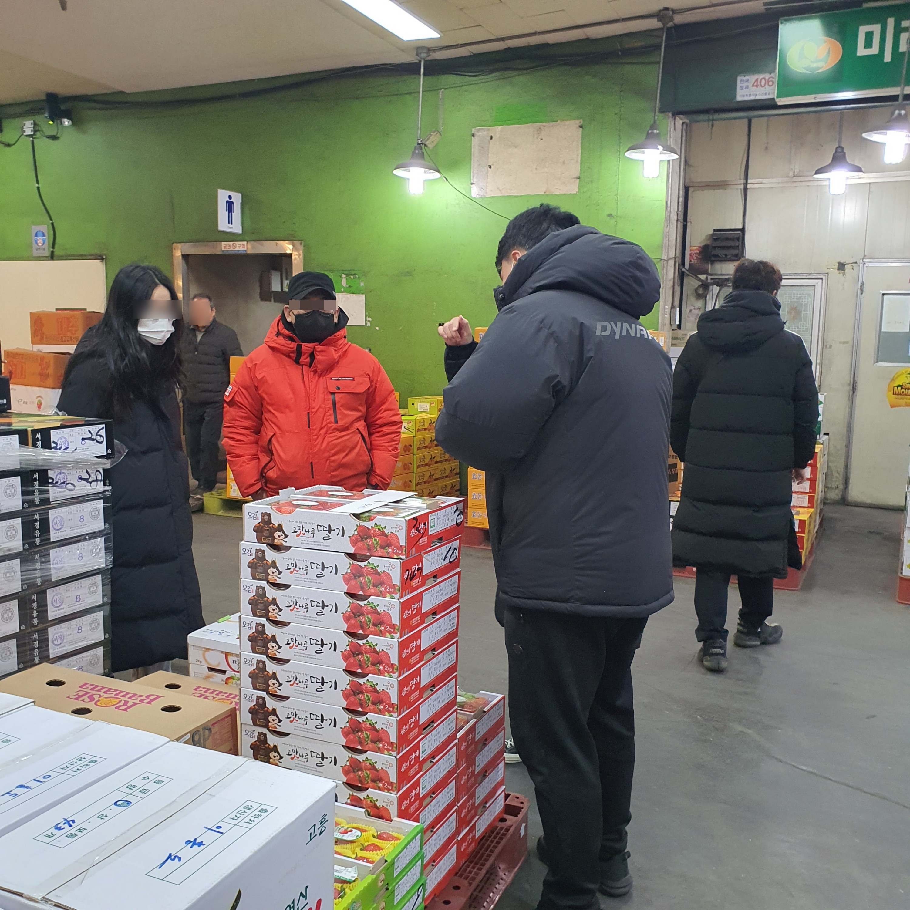
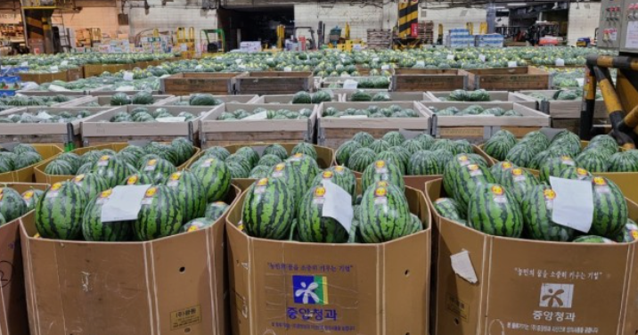
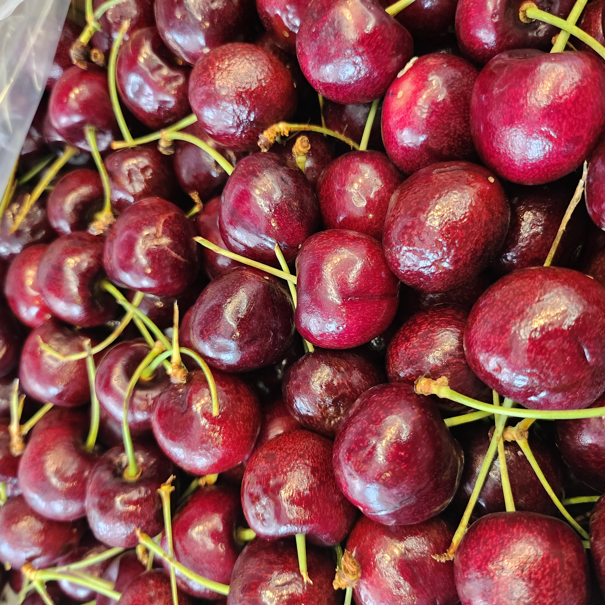
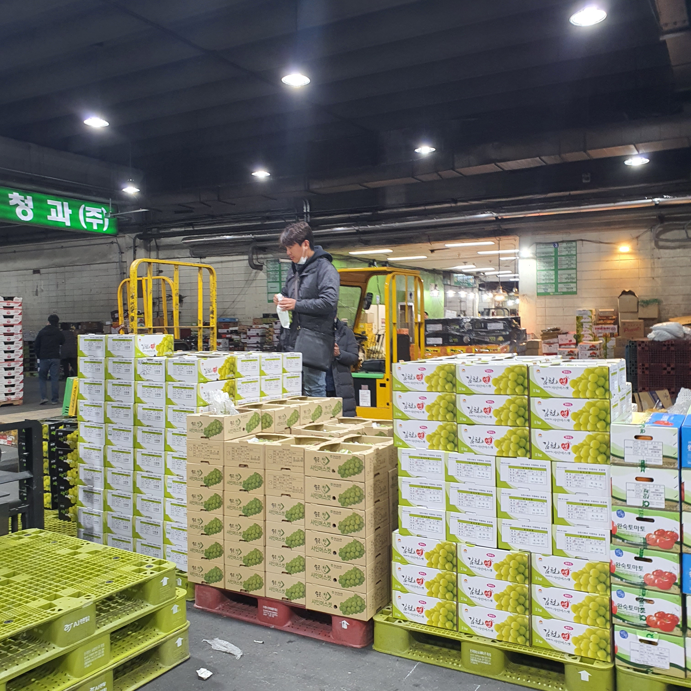
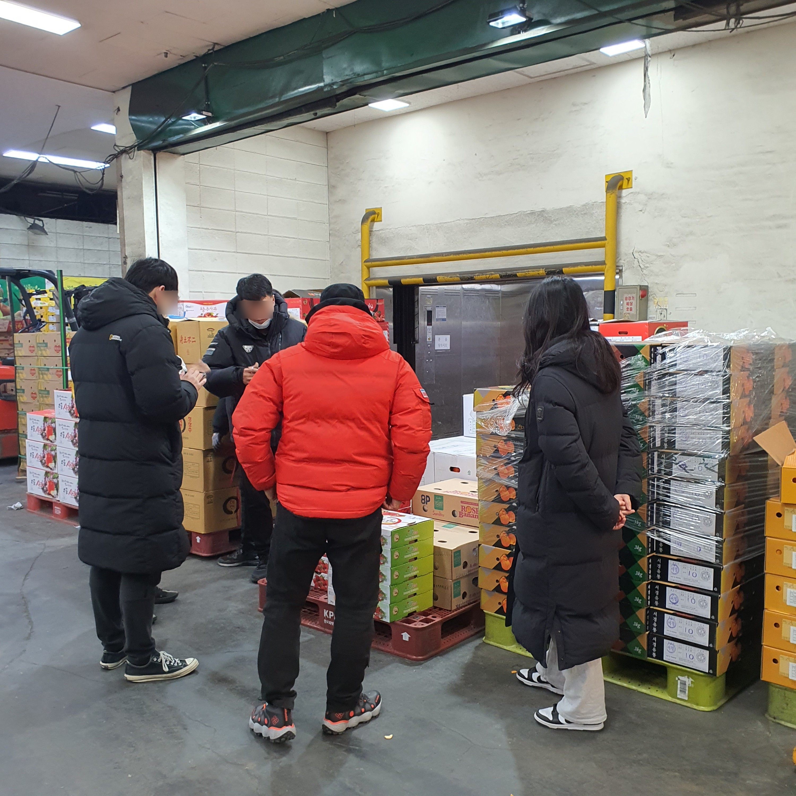
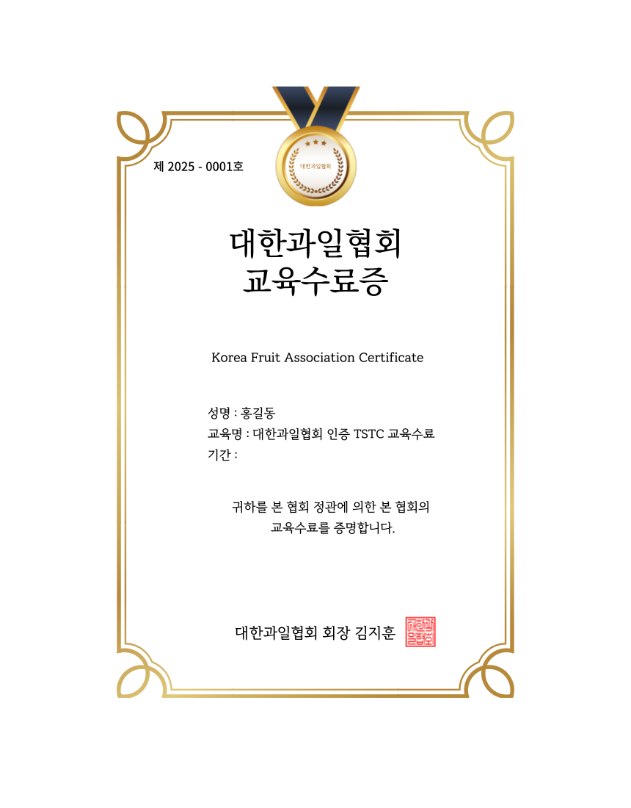
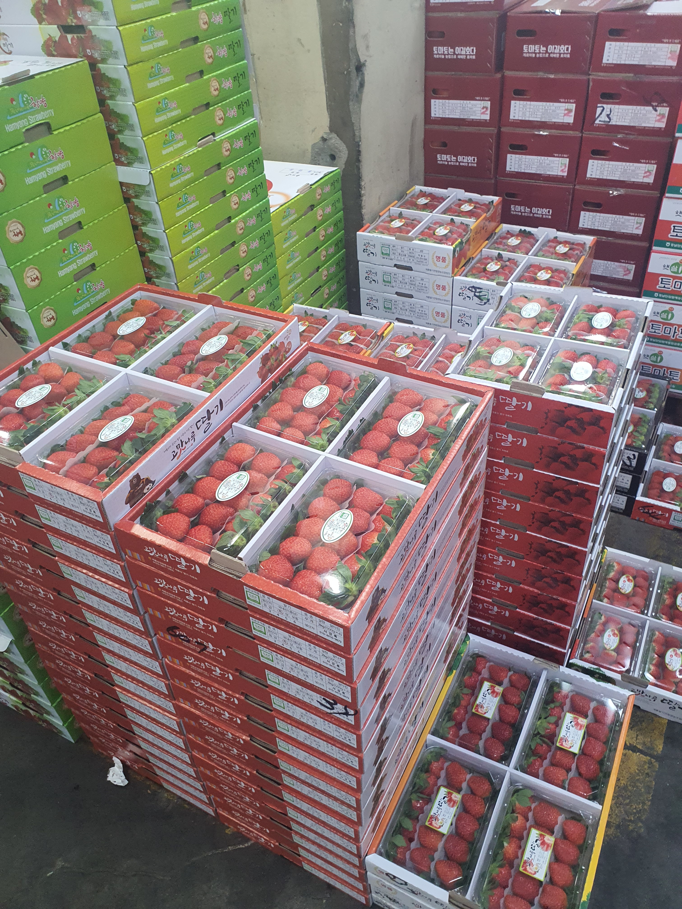
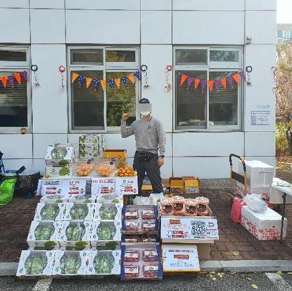

대한과일협회 · KOREA FRUIT ASSOCIATION
대한과일협회는
"현장"에서
시작했습니다.
2016년 과일 유통 현장에서 시작해, 2022년 협회를 세웠습니다. 교육 · 유통 · 연구 · 전문인력 양성으로 과일 산업과 사람을 잇습니다.





What we do
과일 산업과 교육을 연결합니다.
좋은 과일을 잘 고르고, 잘 전하고, 잘 가르치는 일. 대한과일협회는 네 가지 일을 합니다.
-
01
교육
과일코디네이터 양성 과정과 시장 견학, 포장·유통 실무 교육.
-
02
유통
새벽 도매시장에서 쌓은 경험으로 좋은 과일을 가려내는 기준.
-
03
연구
사람마다 다른 과일 취향을 읽는 감각 연구 프로젝트, TSTC.
-
04
전문인력 양성
현장에서 바로 활동하는 과일 전문가를 길러냅니다.
On the ground · 현장
책상 위에서 과일을
배우지 않았습니다.
새벽 도매시장, 경매장, 산지. 우리는 현장에서 보고, 현장에서 배우고, 현장에서 답을 찾았습니다.



인사말
“2016년, 새벽 도매시장 한켠에서 과일을 배우기 시작했습니다. 좋은 과일을 고르는 법은 책이 아니라 현장에서 익혔습니다.
그렇게 오래 시장에 서 있다 보니, 좋은 과일보다 그 사람에게 맞는 과일이 더 중요하다는 걸 알게 됐습니다. 같은 사과 한 알도 누구에게는 선물이 되고, 누구에게는 일상이 됩니다.
대한과일협회는 그 마음에서 시작했습니다. 과일을 파는 기술이 아니라, 과일을 제대로 전하는 사람을 키우는 일. 현장에서 배운 것을 더 많은 분과 나누겠습니다.”
— 대한과일협회 회장 김지훈


Fruit Coordinator
자격증이 아니라,
사람을 키우는 일입니다.
과일코디네이터는 좋은 과일을 찾는 사람이 아니라, 그 사람에게 맞는 과일 경험을 설계하는 사람입니다. 협회의 핵심 인재 양성 프로그램으로 운영합니다.
양성 과정 보기Experience · 경험
과일은 상품이 아니라,
경험입니다.
한 끼의 컷팅과일로, 마음을 담은 선물로. 상황과 목적에 따라 과일의 역할은 달라집니다.
Education · 교육
현장을 아는 사람이
가르칩니다.
자격 과정부터 시장 견학, 과일 포장과 유통 실무까지. 이론이 아니라 바로 쓰는 교육을 합니다.



TSTC · 감각 연구
10년을 시장에서 보내며,
한 가지 질문이 남았습니다.
왜 어떤 과일은 끝까지 먹고,
어떤 과일은 남겨질까요.
TSTC는 그 질문에서 시작된 대한과일협회의 감각 연구 프로젝트입니다. 맛(Taste) · 향(Scent) · 식감(Texture) · 색(Color), 네 가지로 사람의 과일 취향을 읽습니다.